X566–X642¶
Brocard Axis Circles & Gibert Centers
X566–X642 (Brocard Axis Circles & Gibert Centers) — 16 representative centers (from 77 in collection) constructed on acute reference triangle \((a, b, c) = (5, 6, 7)\) with unit baseline AB = \(1\).¶
Group Preamble — Centers X566-X584
Centers X566-X584 lie on the Brocard axis, L(3,6). Each is the center X of a circle that meets the sides of triangle ABC with three equal angles at X.
Let AB, AC, BC, BA, CA, CB denote the meeting-points; e.g., AB and CB are on side CA. The equal angles are given by
D = angle(ABXAC) = angle(BCXBA) = angle(CAXCB)
Then trilinears for X are given by
X = sin A + cot D/2 cos A : sin B + cot D/2 cos B : sin C + cot D/2 cos C.
Definitions: Y is the orthogonal of X if D(X) + D(Y) = π/2;
Y is the harmonic of X if X and Y are harmonic conjugates with respect to X3 and X6;
Y is the orthoharmonic if Y is the harmonic of the orthogonal of X. The centers in this section were contributed by Edward Brisse, December, 2000.
Group Preamble — Centers X616-X642
Centers X616-X642 were contributed by Bernard Gibert, March 2, 2001. Notation:
\(S_{A}\) = (\(b^{2}\) + \(c^{2}\) - \(a^{2})\)/2 \(S_{B}\) = (\(c^{2}\) + \(a^{2}\) - \(b^{2})\)/2 \(S_{C}\) = (\(a^{2}\) + \(b^{2}\) - \(c^{2})\)/2
Joe Goggins (Oct. 19, 2005) found trilinears for points in this section, using the following notation. Let
Trilinears of this sort are given below at Xi for these i: 616-619, 621-624, 627-630, and 633-636.
X566HARMONIC OF X50
X567ORTHOGONAL OF X50
X568ORTHOHARMONIC OF X50
X569HARMONIC OF X52
X570ORTHOGONAL OF X52
X571ORTHOHARMONIC OF X52
X572ORTHOGONAL OF X58
X573ORTHOHARMONIC OF X58
X574HARMONIC OF X187
X575ORTHOGONAL OF X187
X576ORTHOHARMONIC OF X187
X577HARMONIC OF X216
X578ORTHOHARMONIC OF X216
X579HARMONIC OF X284
X580ORTHOGONAL OF X284
X581ORTHOHARMONIC OF X284
X582HARMONIC OF X500
X583ORTHOGONAL OF X500
X584ORTHOHARMONIC OF X500
X5851st CONGRUENT SHRUNK INSQUARES POINT
X5862nd CONGRUENT SHRUNK INSQUARES POINT
X5881st KENMOTU-VAN LAMOEN POINT
X5892nd KENMOTU-VAN LAMOEN POINT
X590ISOGONAL CONJUGATE OF X588
X5911st VAN LAMOEN PERPENDICULAR BISECTORS POINT
X592VAN LAMOEN CIRCUMCENTERS POINT
X5931st HATZIPOLAKIS-YIU POINT
X594ISOGONAL CONJUGATE OF X593
X5952nd HATZIPOLAKIS-YIU POINT
X596ISOGONAL CONJUGATE OF X595
X597MIDPOINT OF X2 AND X6
X598ISOGONAL CONJUGATE OF X574
X599ISOTOMIC CONJUGATE OF X598
X6003rd HATZIPOLAKIS-YIU POINT
X603-CEVA CONJUGATE OF X56
X604-CEVA CONJUGATE OF X31
X605INTERSECTION OF LINES X371X_602 AND X372X_601
X606INTERSECTION OF LINES X371X_601 AND X372X_602
X607ISOGONAL CONJUGATE OF X348
X608ISOGONAL CONJUGATE OF X345
X610-CEVA CONJUGATE OF X1
X612INTERSECTION OF LINES X1X_2 AND X9X_31
X614INTERSECTION OF LINES X1X_2 AND X11X_33
X615ISOGONAL CONJUGATE OF X589
X616ANTICOMPLEMENT OF X13
X617ANTICOMPLEMENT OF X14
X618COMPLEMENT OF X13
X619COMPLEMENT OF X14
X620MIDPOINT OF X618 AND X619
X621ANTICOMPLEMENT OF X15
